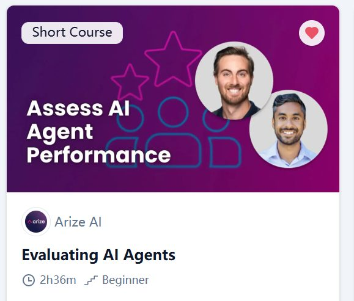
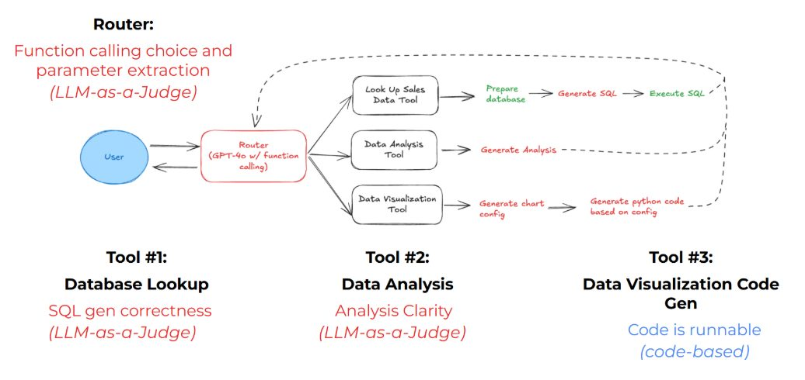
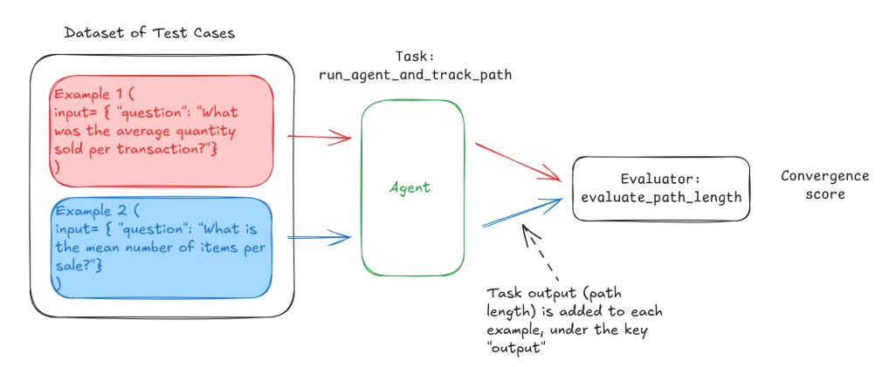
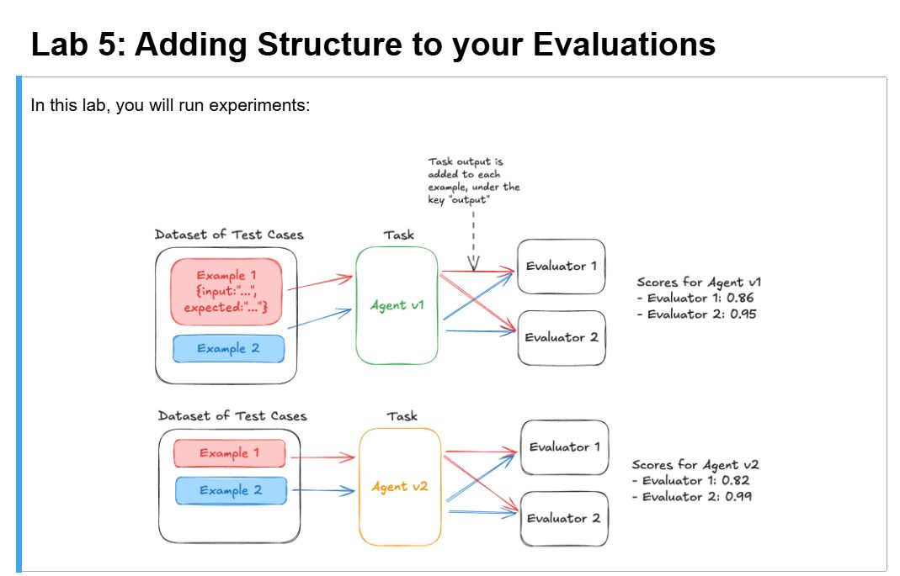

Learning Record 04
Evaluating AI Agents

网站：Evaluating AI Agents - DeepLearning.AI
学习背景/总览
依旧是感觉LangGraph没什么学习动机，不是很想看相关课程，然后看了看别的课，感觉很多内容也是没什么吸引力，就是那种又重新带你入门的感觉，虽然确实里面有些内容还是吸引人的，但是总体来说就不愿意开始学。
然后发现了这么课，首先是主题确实是我想了解的，（这里还有我关于Astabench这篇论文的血泪史），然后看目录确实也不是很重复，于是开始上。
但是这门课总体来说还是挺难的......有一些关于数据库的基本操作，虽然我不用写，但是不理解我还是很难受的（感谢LLM大人的神力），其次还要用phoenix这个open-source AI observability platform（我发现其实很多课，可能是这些short courses的特性，基本上都很像某个产品的tutoria，不过确实对于我这种小白来说还是挺有帮助的），再再然后，英语听的费劲，我觉得主要是因为这次直接看video还是很难理解代码，所以看英文字幕也基本顺不下来，后面的章节基本是听着听着就暂停，把代码在LLM的辅助下全看一遍再重看video.....
收获
1.搭了一个如下的数据分析Agent

2.用phoenix来跟踪/收集Agent轨迹，实现方法包括自动搜集对LLM的访问轨迹，以及自己埋点
3.对Router和几个tool进行了evaluate，使用不同的方法，同样基于phoenix接口，如上图
4.对Agent执行轨迹进行分析，一般流程是先定义数据集，然后让Agent执行由数据集创建的Task获得原始输出，通过定义不同的evaluator metrics来评估输出最后得到评分

5.基本上衔接上一点，只是同时执行多个evaluator，测试多个指标，所以叫做分析加上结构，如下图

然后同样的基于phoenix平台的显示，这个过程更加accessible
6.最后讲了一些理论，关于怎么improve LLM-as-a-judge，和Monitoring Agents in production，这些相关知识挺好的，我现在还没梳理好，后续都可以随时看，整体是挺轻量的
总体：这门课还是挑战挺大的，但也了解了挺多东西。
不足：但是还是那个问题，我还是会觉得自己对于这个领域的了解太浅了，自己也没有做过实际项目，搭过真实可用的Agent，所以很多知识还是不能有机的联系在一起
阶段性感受—2026/6/28
今天本来想继续看关于LangChain的视频，但是感觉确实没什么兴趣了，刚开始感兴趣是因为第一次看到Agent搭建（虽然是toy）的过程和一些原来陌生的概念都得到了很好的解释。但是现在感觉自己只是看着帮助还是太有限了，这只是让我了解了更多的碎片，但是我没有搭建出一个自己的东西，或者说还没有一个更好的学习动机让我深入这方面的学习
刚收集了很多关于LLM 的相关课程资料，感觉这个现在我也很感兴趣，从LLM model 的pretraining ,post-training到fine-tuing等，以及Llama的一些相关课程，整体相关性还是很高的！
EXITING! ! !
LET’S GO！！！